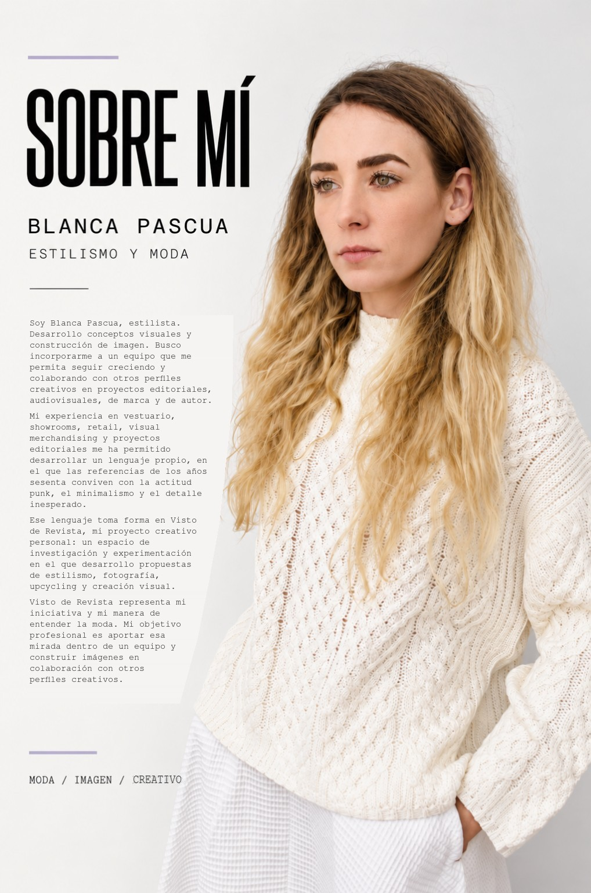

SOBRE MÍ
Soy Blanca Pascua, estilista. Desarrollo conceptos visuales y construcción de imagen. Busco incorporarme a un equipo que me permita seguir creciendo y colaborando con otros perfiles creativos en proyectos editoriales, audiovisuales, de marca y de autor.
Mi experiencia en vestuario, showrooms, retail, visual merchandising y proyectos editoriales me ha permitido desarrollar un lenguaje propio, en el que las referencias de los años sesenta conviven con la actitud punk, el minimalismo y el detalle inesperado.
Ese lenguaje toma forma en Visto de Revista, mi proyecto creativo personal: un espacio de investigación y experimentación en el que desarrollo propuestas de estilismo, fotografía, upcycling y creación visual.
Visto de Revista representa mi iniciativa y mi manera de entender la moda. Mi objetivo profesional es aportar esa mirada dentro de un equipo y construir imágenes en colaboración con otros perfiles creativos.
PULSA EL TEXTO O LA FOTOGRAFÍA PARA AMPLIAR